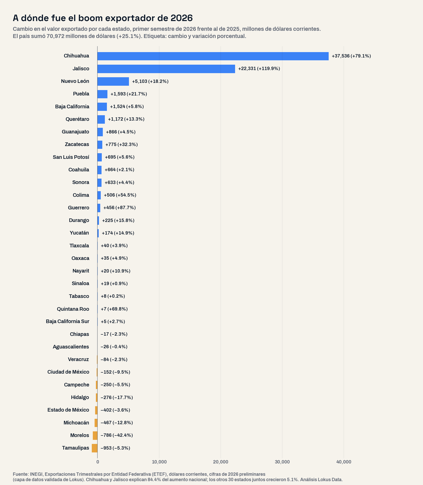
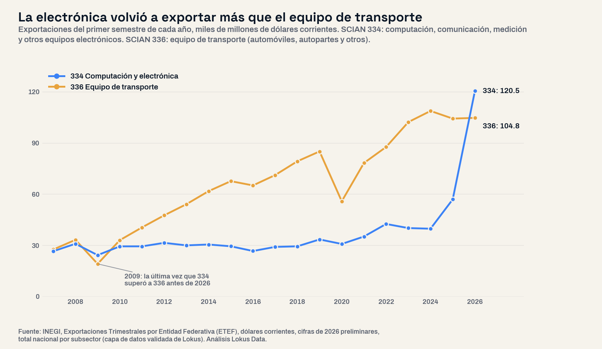

Dos estados se quedaron con 84% del boom exportador de 2026: el mapa de la demanda estado por estado
Las exportaciones de los 32 estados crecieron 25.1% en el primer semestre de 2026 y la electrónica explica 89.5% del aumento. Chihuahua y Jalisco ya venden 35.6% de todo lo que exporta el país; los otros 30 estados crecieron 5.1% y diez exportaron menos que en 2025.

El panorama: 70,972 millones de dólares más en un semestre
Entre enero y junio de 2026 los 32 estados vendieron al exterior mercancías por 353,378 millones de dólares, 25.1% más que en el primer semestre de 2025 y el semestre más alto desde que el INEGI publica la serie por estado, en 2007. El dato del segundo trimestre, publicado el 30 de septiembre, fue de 195,260.7 millones (+31.6%), y la aceleración lleva un año: 8.3% anual en el tercer trimestre de 2025, 13.8% en el cuarto, 17.9% en el primero de 2026.
Para quien vende a exportadores, los provee o compite por su talento, la pregunta útil no es cuánto creció el país sino dónde. Este análisis partió de esa pregunta abierta: se ordenaron los 32 estados por el cambio de su valor exportado, sin preseleccionar regiones, con las Exportaciones Trimestrales por Entidad Federativa (ETEF) del INEGI, y se cruzó por separado con el empleo formal del IMSS y el Censo Económico 2024. La ETEF mide dólares corrientes y asigna cada exportación al estado de la planta; no incluye comercio ni servicios, por eso su total es menor que el de la balanza comercial (389,723 millones de dólares en el semestre, +24.6%).
La lectura de negocio
El promedio engaña: el país exportó 25.1% más, pero 30 de los 32 estados juntos crecieron 5.1%. Un plan comercial que dimensione la demanda exportadora con el dato nacional sobreestima el mercado en casi todo el territorio.
El mapa: dos estados, 84 de cada 100 dólares nuevos
Chihuahua sumó 37,536 millones de dólares (+79.1%) y Jalisco 22,331 millones (+119.9%): juntos explican 84.4% del aumento nacional. Muy atrás siguen Nuevo León (+5,103 millones, +18.2%), Puebla (+1,593, +21.7%), Baja California (+1,524, +5.8%) y Querétaro (+1,172, +13.3%). Diez estados exportaron menos que en 2025; las mayores caídas en dólares fueron Tamaulipas (−953 millones, −5.3%), Morelos (−786, −42.4%), Michoacán (−467, −12.8%) y el Estado de México (−402, −3.6%).
La participación de mercado se reacomodó en un solo semestre. Chihuahua pasó de 16.8% a 24.1% de las exportaciones del país. Jalisco subió del sexto al segundo lugar (6.6% a 11.6%): en toda la serie nunca había estado arriba del sexto. Coahuila, segundo exportador en 2025, bajó al cuarto (11.4% a 9.3%), detrás de Nuevo León. Ya habíamos medido dónde crece la base manufacturera de las 32 entidades con el Censo Económico; las exportaciones de 2026 dibujan un mapa más concentrado.
La cadena de valor: la electrónica rebasó al equipo de transporte
El motor tiene nombre. La fabricación de equipo de computación, comunicación, medición y otros electrónicos (SCIAN 334) exportó 120,541 millones de dólares en el semestre, 111.5% más que un año antes, y explica 89.5% del aumento nacional. Su peso en las exportaciones del país pasó de 20.2% a 34.1%. El equipo de transporte (SCIAN 336), que incluye automóviles y autopartes, quedó en 104,780 millones, 0.4% más, y su peso bajó de 37.0% a 29.7%. Es la primera vez desde 2009 que la electrónica exporta más que el equipo de transporte. Sin la rama 334, las exportaciones crecieron 3.3%.

El hub está bien localizado. Según los boletines del INEGI, que publican la rama 334 de los principales estados, la electrónica fue 75.0% de lo que exportó Chihuahua en el semestre y 81.5% de lo que exportó Jalisco; los dos venden 80.6% de toda la electrónica exportada por el país. Con las variaciones publicadas en esos boletines estimamos que alrededor de 98 de cada 100 dólares del aumento de cada uno de los dos estados vinieron de esa rama. El Censo Económico 2024 (actividad de 2023) muestra la base instalada: 453,299 personas ocupadas en la rama en el país; Jalisco genera 25.5% de su producción, Chihuahua 17.0% y Baja California 16.4%. Por municipio, los mayores empleadores de la rama son Juárez (85,515 personas), Tijuana (60,847), Reynosa (40,387) y Zapopan (37,608).
Para los eslabones proveedores, una advertencia de método: la ETEF registra el valor bruto de lo que sale por la frontera, no cuánto de ese valor se compra a proveedores de la región. El tamaño del boom en dólares no es el tamaño del mercado para el proveedor local; ese se mide con la competencia instalada y el empleo de cada municipio.
Riesgos: el mercado exportador más concentrado de la serie
Entre 2007 y 2024, Chihuahua y Jalisco sumaron entre 16.2% y 20.7% de las exportaciones de cada primer semestre; en 2026, 35.6%. En ningún primer semestre desde 2007 los dos estados más exportadores habían concentrado más de 28.2%. Los cinco primeros suman 62.2%, cuando el máximo anterior era 55.2%. La dependencia sectorial es el otro lado: tres de cada cuatro dólares que exporta Chihuahua, y cuatro de cada cinco de Jalisco, salen de una sola rama.
El corredor automotriz no participó del auge. Coahuila exportó +2.1%, Guanajuato +4.5%, San Luis Potosí +5.6%, Aguascalientes −0.4% y Tamaulipas −5.3%. Para un proveedor de esa cadena de valor la demanda exportadora de 2026 está plana, en línea con lo que muestran los 10 gigantes automotrices de México: un sector grande que hoy no crece en ventas al exterior. El caso extremo es Morelos, con 42.4% menos exportaciones.
Perfil del mercado laboral: más dólares, la misma nómina
El boom no se tradujo en más puestos de trabajo formales. En agosto de 2026 el IMSS registró 5,960,599 puestos en la industria de la transformación, 205 menos que un año antes, y la producción manufacturera medida por el indicador trimestral de actividad del INEGI cayó 2.0% en el primer trimestre de 2026. Chihuahua perdió 11,271 puestos manufactureros formales (−2.3%) y Jalisco sumó 11,590 (+2.2%); Nuevo León fue el estado con más puestos nuevos (+23,608).
Juárez, Chihuahua, el municipio con más empleo en electrónica del país, fue también el que más puestos manufactureros formales perdió entre agosto de 2025 y agosto de 2026 entre los 1,447 con registro: 13,079 (−4.3%). Zapopan sumó 4,858. El salario base de cotización manufacturero de agosto de 2026 fue de $801 diarios en Juárez, $752 en Chihuahua, $678 en Jalisco y $728 en el promedio nacional, en pesos corrientes. Para quien contrata, el hub electrónico más grande del país tiene hoy menos nómina formal que hace un año. El IMSS registra el empleo por domicilio del patrón y no se combina con los dólares exportados en ningún indicador.
| Estado | Exportaciones 1S2026 (MUSD) | Cambio vs 1S2025 (MUSD) | Variación | Participación | Empleo formal manufacturero ago-25 a ago-26 | Salario base manufacturero ago-2026 (pesos/día) |
|---|---|---|---|---|---|---|
| Chihuahua | 85,014 | +37,536 | +79.1% | 24.1% | −11,271 | $752 |
| Jalisco | 40,963 | +22,331 | +119.9% | 11.6% | +11,590 | $678 |
| Nuevo León | 33,071 | +5,103 | +18.2% | 9.4% | +23,608 | $800 |
| Puebla | 8,943 | +1,593 | +21.7% | 2.5% | −1,593 | $695 |
| Baja California | 27,864 | +1,524 | +5.8% | 7.9% | −4,057 | $820 |
| Querétaro | 9,966 | +1,172 | +13.3% | 2.8% | −836 | $802 |
| Guanajuato | 20,184 | +866 | +4.5% | 5.7% | −5,840 | $677 |
| Zacatecas | 3,178 | +775 | +32.3% | 0.9% | +2,379 | $608 |
| San Luis Potosí | 13,162 | +695 | +5.6% | 3.7% | −1,679 | $806 |
| Coahuila | 32,856 | +664 | +2.1% | 9.3% | −6,054 | $796 |
| Sonora | 15,174 | +633 | +4.4% | 4.3% | −828 | $736 |
| Colima | 1,436 | +506 | +54.5% | 0.4% | +600 | $543 |
| Guerrero | 976 | +456 | +87.7% | 0.3% | −585 | $506 |
| Durango | 1,649 | +225 | +15.8% | 0.5% | +1,937 | $525 |
| Yucatán | 1,339 | +174 | +14.9% | 0.4% | −3,009 | $589 |
| Tlaxcala | 1,054 | +40 | +3.9% | 0.3% | −3,084 | $583 |
| Oaxaca | 741 | +35 | +4.9% | 0.2% | +78 | $608 |
| Nayarit | 198 | +20 | +10.9% | 0.1% | +1,189 | $481 |
| Sinaloa | 2,058 | +19 | +0.9% | 0.6% | −646 | $508 |
| Tabasco | 3,168 | +8 | +0.2% | 0.9% | −327 | $612 |
| Quintana Roo | 16 | +7 | +69.8% | 0.0% | +1,612 | $515 |
| Baja California Sur | 190 | +5 | +2.7% | 0.1% | −176 | $472 |
| Chiapas | 725 | −17 | −2.3% | 0.2% | +1,145 | $518 |
| Aguascalientes | 6,685 | −26 | −0.4% | 1.9% | −3,863 | $721 |
| Veracruz | 3,648 | −84 | −2.3% | 1.0% | +254 | $713 |
| Ciudad de México | 1,453 | −152 | −9.5% | 0.4% | +17,907 | $732 |
| Campeche | 4,336 | −250 | −5.5% | 1.2% | −359 | $601 |
| Hidalgo | 1,285 | −276 | −17.7% | 0.4% | +276 | $600 |
| Estado de México | 10,719 | −402 | −3.6% | 3.0% | −6,817 | $691 |
| Michoacán | 3,193 | −467 | −12.8% | 0.9% | −34 | $605 |
| Morelos | 1,070 | −786 | −42.4% | 0.3% | −4,764 | $731 |
| Tamaulipas | 17,062 | −953 | −5.3% | 4.8% | −6,958 | $801 |
Ordenados por el cambio en dólares. Sombreados: Chihuahua y Jalisco. MUSD = millones de dólares corrientes. Empleo y salario: IMSS, división 3 «Industrias de la Transformación», por domicilio del patrón. Fuente: INEGI (ETEF), IMSS (capa Oro Lokus).
Insights para la acción
- Dimensiona por estado, no con el promedio. Sin Chihuahua y Jalisco, el 25.1% nacional se reduce a 5.1%. Fuera de la electrónica, las exportaciones del país crecieron 3.3%.
- Si vendes a la electrónica, el mercado tiene dirección. Chihuahua y Jalisco concentran 80.6% de las exportaciones de la rama, y Juárez, Tijuana, Reynosa y Zapopan son los municipios con más personal ocupado en ella. Es un hub con escala, pero también con alta dependencia de un solo tipo de producto.
- La demanda automotriz de exportación está plana. Con la rama 336 en +0.4% y Coahuila, Guanajuato y Aguascalientes entre −0.4% y +4.5%, la expansión de un proveedor automotriz en 2026 depende de ganar participación, no de un mercado que crece.
- Talento: el volumen no se tensó. La manufactura formal tiene el mismo número de puestos que hace un año y Juárez perdió 13,079. Antes de suponer escasez de mano de obra en el hub electrónico, revisa el registro mensual del municipio.
- Cruza con la competencia instalada. Las exportaciones dicen dónde está la demanda industrial; el estudio de mercado y el conteo de unidades económicas dicen cuánta oferta ya atiende a esa demanda en cada estado y municipio.
Conclusión
El récord exportador de 2026 es real, pero no es un mercado nacional: es una rama, la electrónica, en dos estados, Chihuahua y Jalisco, que se quedaron con 84 de cada 100 dólares nuevos. El resto del país creció 5.1%, el corredor automotriz quedó plano y la nómina manufacturera formal no aumentó. Para quien decide dónde expandirse, el dato que importa no es el 25.1% del titular, sino a qué estado, a qué rama y a qué municipio llegó cada dólar.
Preguntas frecuentes
¿Cuánto crecieron las exportaciones de México en 2026?
Las exportaciones de los 32 estados sumaron 353,378 millones de dólares en el primer semestre de 2026, 25.1% más que en el de 2025, según la ETEF del INEGI. Solo el segundo trimestre creció 31.6%.
¿Qué estados exportan más en 2026?
Chihuahua (24.1% del total del semestre), Jalisco (11.6%), Nuevo León (9.4%), Coahuila (9.3%) y Baja California (7.9%). Juntos suman 62.2%.
¿Qué está impulsando las exportaciones mexicanas?
La rama de equipo de computación, comunicación y electrónicos (SCIAN 334), que creció 111.5% y explica 89.5% del aumento del semestre. Por primera vez desde 2009 exporta más que el equipo de transporte, que creció 0.4%.
¿Qué estados exportaron menos en 2026?
Diez estados tuvieron menos exportaciones en el primer semestre de 2026 que en el de 2025: Aguascalientes, Veracruz, Chiapas, Estado de México, Tamaulipas, Campeche, Ciudad de México, Michoacán, Hidalgo y Morelos, con la mayor caída (−42.4%).
Análisis basado en las Exportaciones Trimestrales por Entidad Federativa (ETEF) del INEGI, 2007 al segundo trimestre de 2026, dólares corrientes, cifras de 2026 preliminares (edición del 4 de octubre de 2026), total por estado y total nacional por subsector; boletines de la ETEF 406/26 y 609/26 del INEGI para la rama 334 por estado (cuadro 4); Balanza Comercial de Mercancías de México de junio de 2026 (INEGI); IMSS, puestos de trabajo afiliados y salario base de cotización, división 3 «Industrias de la Transformación» (no equivale al sector 31-33 del SCIAN), agosto de 2024 a 2026, por estado y municipio, empleo formal privado por domicilio del patrón; Indicador Trimestral de la Actividad Económica Estatal (ITAEE) del INEGI, serie original, primer trimestre de 2026; Censos Económicos 2024 (año de referencia 2023), rama 334 por estado y municipio (confidencial en siete estados). Consultado en la capa de datos validada de Lokus; los 32 estados se cotejaron contra los cuadros de los boletines del INEGI sin diferencias. Universo completo de 32 estados ordenado por el cambio del valor exportado entre el primer semestre de 2025 y el de 2026; la contribución se calcula sobre el aumento nacional; las exportaciones miden valor bruto, no valor agregado, y no se combinan con el empleo en ningún indicador. Clasificación SCIAN: 31-33 industrias manufactureras, 334 fabricación de equipo de computación, comunicación, medición y otros equipos, componentes y accesorios electrónicos, 335 equipo eléctrico, 336 fabricación de equipo de transporte, 21 minería, 11 agropecuario. Fecha de análisis: 10 de octubre de 2026. Para medir la demanda, la competencia, el empleo formal y el tamaño del mercado de cualquier estado o municipio con datos oficiales integrados, visita lokusdata.com